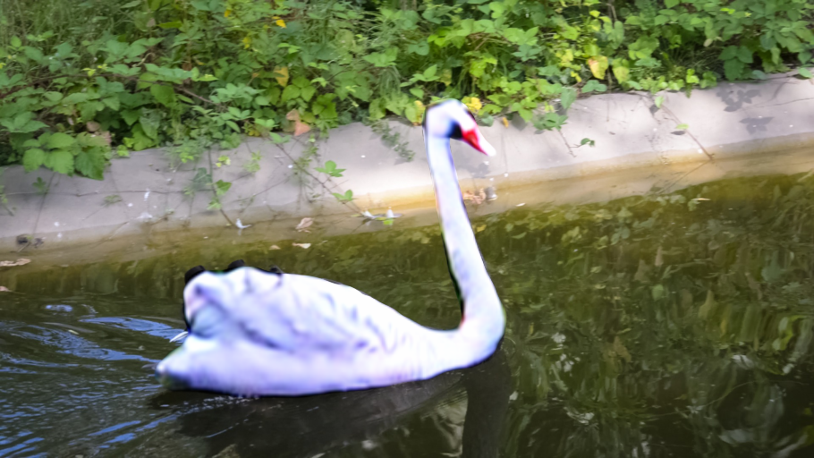
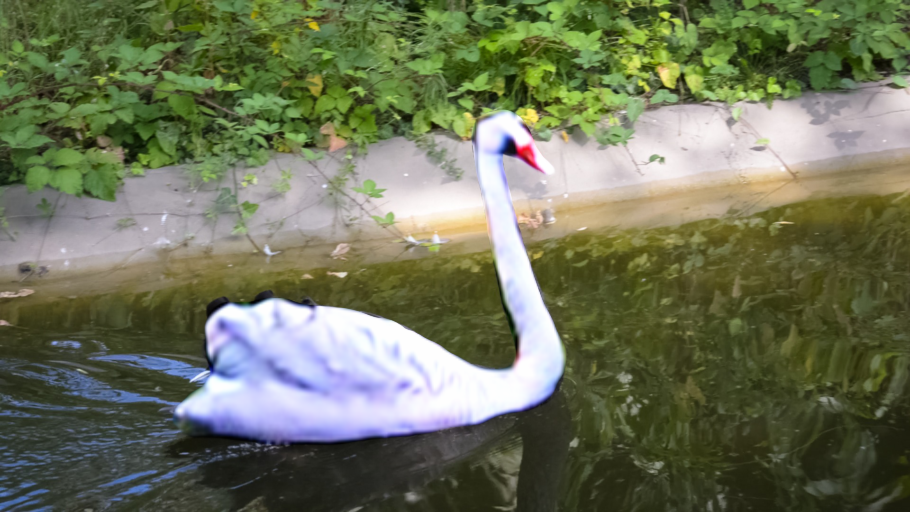

Text-driven Visual Synthesis with Latent Diffusion Prior
University of Maryland, College Park
University of Maryland, College Park
There has been tremendous progress in large-scale text-to-image synthesis driven by diffusion models enabling versatile downstream applications such as 3D object synthesis from texts, image editing and generation. We present a generic approach using latent diffusion models as powerful image priors for various visual synthesis tasks. Existing methods that utilize such priors fail to use these models' full capabilities. To improve this, our core ideas are
Our method guides the generation and editing given a text prompt. We obtain the latent code from a differentiable renderer under different applications. This latent code 𝑣 is perturbed following the latent diffusion model’s scheduler at a random timestep 𝑡, such that 𝐹𝑡: z𝑡 = 𝛼𝑡𝑣 + 𝜎𝑡𝜖. This perturbed latent code z𝑡 is then passed to the UNet to generate the predicted noise 𝜖ˆ. We then use the predicted noise 𝜖ˆ to derive the latent score distillation gradient. To derive the feature matching gradient, we input the latent code 𝑣 and noised latent code 𝑣 + (𝜖ˆ − 𝜖) into the decoder 𝐺𝜙𝑑𝑒𝑐(·). We compute the difference between the multi-level features from three different layers of the decoder to compute the feature matching loss. Finally, both the latent score distillation and multi-level feature matching gradients are backpropagated to the differentiable renderer.
(a) Text-to-3D
(b) StyleGAN adaptation
(c) Layered image editing.
To apply our proposed method, we first obtain the latent code 𝑣 using the differentiable renderer in each application. As illustrated in the above figure, to obtain the image that produces 𝑣 with StableDiffusion encoder 𝐸𝜙𝑑𝑒𝑐 , in (a) Text-to-3D, we render from a NeRF model with a random camera viewpoint; (b) StyleGAN adaptation, we generate the image with a pretrained StyleGAN model; (c) Layered image editing application, we use the generator of Text2LIVE to synthesize the edited image, alpha map, and the alpha blending of the initial and edited images.
Source
StyleGAN-NADA
[Gal et al. 2022]
StyleGANFusion
[Song et al. 2022]
Ours
Text prompt: Photo of a face [SEP] A realistic detailed portrait, single face, science fiction, artstation, volumetric lighting, octane render.
Example
Compare our method with StyleGAN-NADA [Gal et al. 2022] and StyleGANFusion [Song et al. 2022] on FID (left, the lower the better) and LPIPS/CLIP (right, the higher the better) score.
*Prompt1: "3d cute cat, closeup cute and adorable, cute big circular reflective eyes, long fuzzy fur, Pixar render, unreal engine cinematic smooth, intricate detail, cinematic" **Ptompt2: "A beautiful portrait of a cute cat. character design by cory loftis, fenghua zhong, ryohei hase, ismail inceoglu and ruan jia. artstation, volumetric light, detailed, photorealistic, fantasy, rendered in octane"Jacobian NeRF
[Wang et al. 2022]
Ours
.
Text prompt: duck
Example
 

Slide the bar to compare input (left) and output (right)
Source Image
Method
@article{liao2023textsyndiffusionprior,
title = {Text-driven Visual Synthesis with Latent Diffusion Prior},
author = {Liao, Ting-Hsuan and Ge Songwei and Xu Yiran and Lee, Yao-Chih and AlBahar Badour and Huang, Jia-Bin},
journal = {arXiv preprint arXiv:},
year = {2023}
}
We thank Jacobian-NeRF, Latent-NeRF, Text2Live and StyleGANFusion authors.